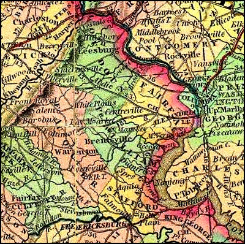
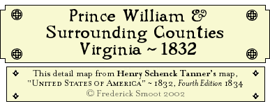

|
Table of Contents
|
William Mitchell to Edward Smoot A Lease & Release ~ 1764 Edward Smoot vs. John Halley A Brief Note on a Law Suit ~ 1764-1790 Thomas Smoot His Will ~ 1783 Zephinia Crook et al to Henry M. Smoote A Deed ~ 1819 Henry M. Smoot to Francis H. Dunnington A Deed of Trust ~ 1822 |

Page © Copyright 2002 Fred Smoot
All Rights Reserved